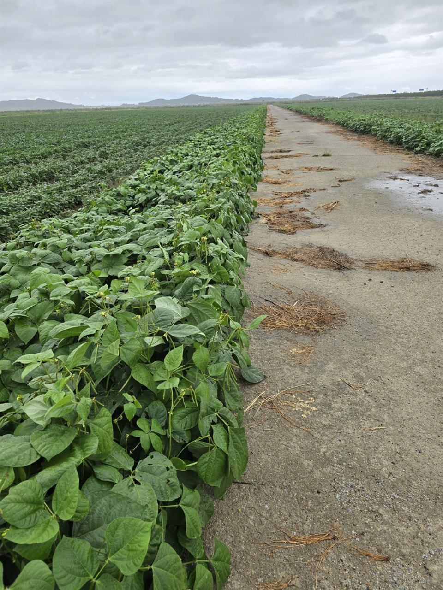
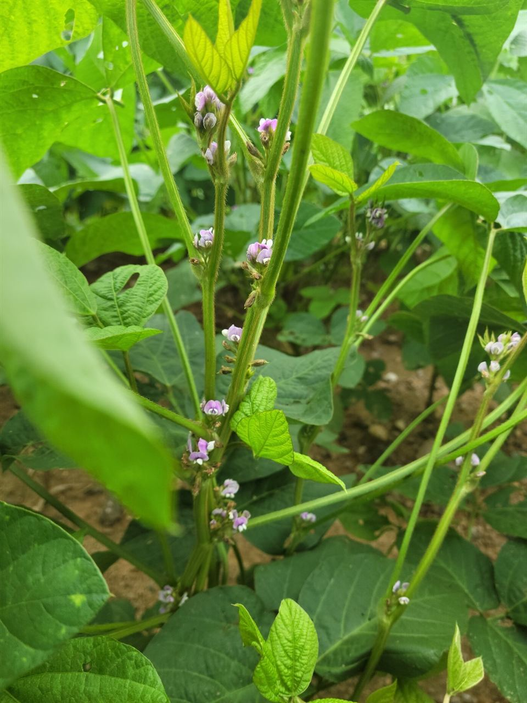
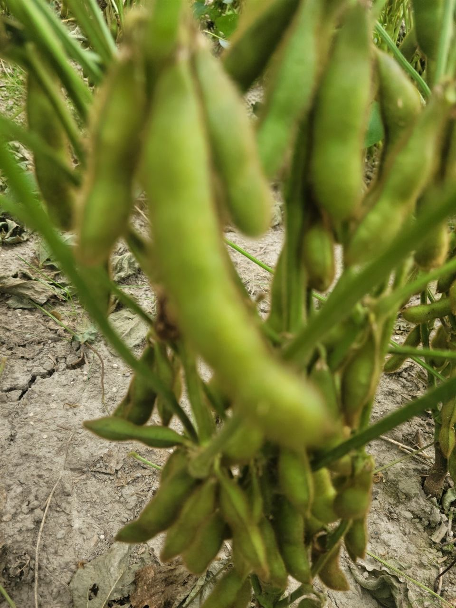
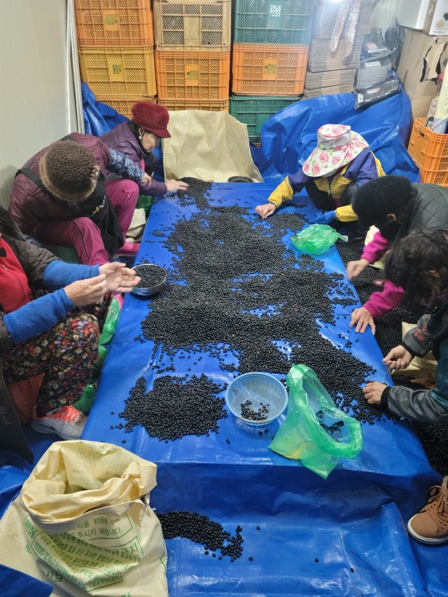

누가, 어디서 길렀는지
알 수 있는 콩
죽산들녘은 전북 김제시 죽산면의 농업회사법인 한걸음이 만든 콩·팥 브랜드입니다. 2026년 기준으로 김제 지역 농가 27곳과 함께합니다. 농가가 들녘에서 기른 콩을 저희가 직접 수매하고, 선별장에서 고르고, 창고에 보관했다가 내보냅니다.
그동안은 수매한 콩 대부분을 식품 회사와 유통 업체에 넘겼습니다. 이제는 같은 콩을 가정의 식탁에도 바로 보내드리려 합니다. 거치는 단계를 줄여 농가에는 든든한 판로를, 드시는 분께는 산지가 분명한 콩을 드리는 것이 목표입니다.
회사 이야기 더 보기 →
세 가지는 꼭 지킵니다
산지를 밝힙니다
김제 죽산 들녘 농가에서 수매한 콩을 팝니다. 원산지와 생산 연도를 상품마다 적어 드립니다.
직접 고릅니다
선별 설비로 돌과 이물, 깨진 알을 걸러 내고 사람 손으로 한 번 더 살핍니다.
산지에서 보냅니다
농업회사법인이 직접 포장해 김제에서 바로 보내드립니다.
콩이 오기까지
죽산 들녘과 한걸음 선별장에서 직접 찍은 사진입니다.





출하 약속부터 발송까지
농가가 기른 콩을 한걸음이 직접 사들여 고르고 보냅니다. 자세한 과정은 회사소개에서 보실 수 있습니다.
출하 약속
농사를 시작하기 전에 함께하는 농가와 재배·출하를 약속합니다.
직접 수매
가을에 거둔 콩을 한걸음이 농가에서 직접 사들입니다. 수매가는 해마다 시세와 품질을 보고 정합니다.
선별·보관
설비로 돌과 이물, 깨진 알을 걸러 내고 손으로 한 번 더 고른 뒤 창고에 보관합니다.
포장·발송
주문이 오면 용량에 맞게 담아 김제에서 보내드립니다.
죽산들녘의 콩과 팥
용량은 500g·1kg·2kg·4kg으로 준비하고 있습니다. 가격은 수매가가 정해지면 안내합니다.


판매가 열리면 이렇게 주문하세요
지금은 2026년 햇콩 판매를 준비하는 단계입니다. 스마트스토어 주소와 대표 전화는 정해지는 대로 이곳에 연결합니다.
상품을 고르세요
서리태·백태·약콩·팥과 용량(500g·1kg·2kg·4kg)을 고르시면 됩니다.
스마트스토어 또는 전화·문자
카드·간편결제는 스마트스토어에서, 문의와 대량 주문은 전화·문자로 받습니다. 지금은 연결을 준비 중입니다.
김제에서 보냅니다
한걸음이 포장해 산지에서 택배로 보내드립니다. 택배사·배송비·출고일은 판매 시작 전에 확정해 안내합니다.
구매 전에 알아 두세요
지금 바로 살 수 있나요?
아직입니다. 2026년 햇콩 판매와 크라우드펀딩을 준비하고 있습니다. 가격은 올해 수매가가 정해진 뒤에 안내하고, 주문이 열리면 구매 안내 페이지의 버튼이 살아납니다.
누가 기르고, 누가 보내나요?
콩은 김제 지역 농가 27곳(2026년 기준)에서 기릅니다. 한걸음이 출하를 약속하고 직접 수매한 뒤, 선별장에서 고르고 죽산들녘 이름으로 포장해 김제에서 발송합니다.
원산지와 인증은 어떻게 표시하나요?
서리태와 백태의 원산지는 국산(전북 김제시)입니다. 약콩(쥐눈이콩)과 팥의 산지는 수매 확인 후 표기합니다. 생산 연도와 판매원(유한회사 한걸음 농업회사법인)은 상품과 포장에 적습니다. GAP·친환경 등 별도의 인증은 확인되는 대로 올리며, 확인 전에는 인증 표시를 붙이지 않습니다.
이용 후기를 볼 수 있나요?
직거래 판매를 시작하기 전이라 아직 후기가 없습니다. 판매가 시작되면 이 자리와 상품 페이지에 실제 후기만 모으겠습니다. 없는 후기를 지어 올려 두지 않습니다.
식당·공방 대량 구매도 되나요?
됩니다. 판매가 시작되면 전화·문자·이메일로 따로 상담해 드립니다. 대표 연락처는 정해지는 대로 연락처 페이지에 올립니다.